화공기사 (2022-04-24 기출문제)
1과목: 공업합성
1. 중과린산석회의 제법으로 가장 옳은 설명은?
- 인산을 암모니아로 처리한다.
- 과린산석회를 암모니아로 처리한다.
- 칠레 초석을 황산으로 처리한다.
- 인광석을 인산으로 처리한다.
(정답률: 65%)

2. 공업적인 HCl 제조방법에 해당하는 것은?
- 부생염산법
- Petersen Tower법
- OPL법
- Meyer법
(정답률: 76%)
3. 석회질소 비료에 대한 설명 중 틀린 것은?
- 토양의 살균효과가 있다.
- 과린산석회, 암모늄염 등과의 배합비료로 적당하다.
- 저장 중 이산화탄소, 물을 흡수하여 부피가 증가한다.
- 분해 시 생성되는 디시안디아미드는 식물에 유해하다.
(정답률: 67%)
4. 석유정제에 사용되는 용제가 갖추어야 하는 조건이 아닌 것은?
- 선택성이 높아야 한다.
- 추출할 성분에 대한 용해도가 높아야 한다.
- 용제의 비점과 추출성분의 비점의 차이가 적어야 한다.
- 독성이나 장치에 대한 부식성이 적어야 한다.
(정답률: 83%)
5. 말레산 무수물을 벤젠의 공기산화법으로 제조하고자 할 때 사용되는 촉매는?
- V2O5
- PdCl2
- LiH2PO4
- Si-Al2O3 담체로 한 Nickel
(정답률: 76%)
6. 전류효율이 90%인 전해조에서 소금물을 전기분해하면 수산화나트륨과 염소, 수소가 만들어진다. 매일 17.75ton 의 염소가 부산물로 나온다면 수산화나트륨의 생산량(ton/day)은?
- 16
- 18
- 20
- 22
(정답률: 61%)
7. 초산과 에탄올을 산 촉매 하에서 반응시켜 에스테르와 물을 생성할 때, 물 분자의 산소원자의 출처는?
- 초산의 C=O
- 초산의 OH
- 에탄올의 OH
- 촉매에서 산소 도입
(정답률: 54%)
8. 암모니아 산화에 의한 질산제조 공정에서 사용되는 촉매에 대한 설명으로 틀린 것은?
- 촉매로는 Pt에 Rh이나 Pd를 첨가하여 만든 백금계 촉매가 일반적으로 사용된다.
- 촉매는 단위 중량에 대한 표면적이 큰 것이 유리하다.
- 촉매형상은 직경 0.2cm 이상의 선으로 망을 떠서 사용한다.
- Rh은 가격이 비싸지만 강도, 촉매활성, 촉매손실을 개선하는데 효과가 있다.
(정답률: 72%)
9. 다음 중 옥탄가가 가장 낮은 가솔린은?
- 접촉개질 가솔린
- 알킬화 가솔린
- 접촉분해 가솔린
- 직류 가솔린
(정답률: 59%)
10. 열가소성 플라스틱에 해당하는 것은?
- ABS수지
- 규소수지
- 에폭시수지
- 알키드수지
(정답률: 63%)
11. 황산제조에 사용되는 원료가 아닌 것은?
- 황화철광
- 자류철광
- 염화암모늄
- 금속제련 폐가스
(정답률: 60%)
12. 650℃에서 작동하며 수소 또는 일산화탄소를 음극연료로 사용하는 연료전지는?
- 인산형 연료전지(PAFC)
- 알칼리형 연료전지(AFC)
- 고체산화물 연료전지(SOFC)
- 용융탄산염 연료전지(MCFC)
(정답률: 60%)
13. 반도체 제조과정 중에서 식각공정 후 행해지는 세정공정에 사용되는 piranha 용액의 주원료에 해당하는 것은?
- 질산, 암모니아
- 불산, 염화나트륨
- 에탄올, 벤젠
- 황산, 과산화수소
(정답률: 63%)
14. 폐수 내에 녹아있는 중금속 이온을 제거하는 방법이 아닌 것은?
- 열분해
- 이온교환수지를 이용하여 제거
- pH를 조절하여 수산화물 형태로 침전제거
- 전기화학적 방법을 이용한 전해 회수
(정답률: 72%)
15. LeBlanc법으로 100% HCl 3000kg을 제조하기 위한 85% 소금의 이론량(kg)은? (단, 각 원자의 원자량은 Na는 23 amu, Cl은 35.5 amu 이다.)
- 3636
- 4646
- 5657
- 6667
(정답률: 68%)
16. 레페(Reppe) 합성반응을 크게 4가지로 분류할 때 해당하지 않는 것은?
- 알킬화 반응
- 비닐화 반응
- 고리화 반응
- 카르보닐화 반응
(정답률: 58%)
17. 환경친화적인 생분해성 고분자로 가장 거리가 먼 것은?
- 전분
- 폴릴이소프렌
- 폴리카프로락톤
- 지방족폴리에스테르
(정답률: 64%)
18. 염화수소 가스 42.3kg을 물 83kg에 흡수시켜 염산을 제조할 때 염산의 농도(wt%)는? (단, 염화수소 가스는 전량 물에 흡수된 것으로 한다.)
- 13.76
- 23.76
- 33.76
- 43.76
(정답률: 75%)
19. 일반적인 공정에서 에텔렌으로부터 얻는 제품이 아닌 것은?
- 에틸벤젠
- 아세트알데히드
- 에탄올
- 염화알릴
(정답률: 74%)
20.
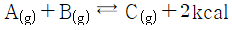
반응에 대한 설명 중 틀린 것은?- 발열반응이다.
- 압력을 높이면 반응이 정방향으로 진행한다.
- 온도을 높이면 반응이 정방향으로 진행한다.
- 가역반응이다.
(정답률: 69%)
2과목: 반응운전
21. 평형상태에 대한 설명 중 옳은 것은?
- (dGt)T.P = 1 이 성립한다.
- (dGt)T.P ＞ 0 가 성립한다.
- (dGt)T.P = 0 이 성립한다.
- (dGt)T.P ＜ 0 가 성립한다.
(정답률: 82%)
22. 질소가 200atm, 250K로 채워져 있는 10L 기체저장탱크에 5L 진공용기를 두 탱크의 압력이 같아질 때까지 연결하였을 때, 기체저장탱크(T1f)와 진공용기(T2f)의 온도(K)는? (단, 질소는 이상기체이고, 탱크 밖으로 질소 또는 열의 손실을 완전히 무시할 수 있다고 가정하며, 질소의 정압열용량은 7 cal/mol·K 이다.)
- T1f = 222.8, T2f = 330.6
- T1f = 222.8, T2f = 133.3
- T1f = 133.3, T2f = 330.6
- T1f = 133.3, T2f = 222.8
(정답률: 31%)
23. 3개의 기체 화학종(N2, H2, NH3)으로 구성된 계에서 아래의 화학반응이 일어날 때 반응계의 자유도는?
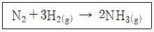
- 0
- 1
- 2
- 3
(정답률: 65%)
24. 기체의 평균 열용량(＜CP＞)과 온도에 대한 2차 함수로 주어지는 열용량(CP)과의 관계식으로 옳은 것은? (단, 열용량은 α + βT + γT2로 주어지며, T0는 초기온도, T는 최종온도, α, β, γ는 물질의 고유상수를 의미한다.)
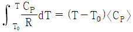
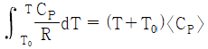
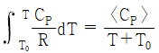
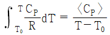
(정답률: 68%)
25. 에탄올과 톨루엔의 65℃에서의 Px 선도는 선형성으로부터 충분히 큰 양(+)의 편차를 나타낸다. 이렇게 상당한 양의 편차를 지닐 때 분자간의 인력을 옳게 나타낸 것은?
- 같은 종류의 분자간의 인력 ＞ 다른 종류의 분자간의 인력
- 같은 종류의 분자간의 인력 ＜ 다른 종류의 분자간의 인력
- 같은 종류의 분자간의 인력 = 다른 종류의 분자간의 인력
- 같은 종류의 분자간의 인력 + 다른 종류의 분자간의 인력 = 0
(정답률: 67%)
26. 공기표준 오토사이클의 효율을 옳게 나타낸 식은? (단, a는 압축비, γ는 비열비(CP/Cv)이다.)
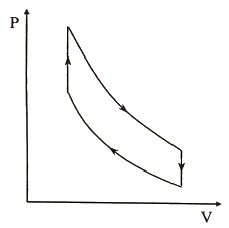
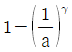
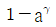
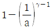
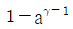
(정답률: 77%)
27. 열역학적 성질에 대한 설명 중 옳지 않은 것은?
- 순수한 물질의 임계점보다 높은 온도와 압력에서는 상의 계면이 없어지며 한 개의 상을 이루게 된다.
- 동일한 이심인자를 갖는 모든 유체는 같은 온도, 같은 압력에서 거의 동일한 Z값을 가진다.
- 비리얼(Virial) 상태방정식의 순수한 물질에 대한 비리얼 계수는 온도만의 함수이다.
- 반데르 발스(Van der Waals) 상태방정식은 기/액 평형상태에서 3개의 부피 해를 가진다.
(정답률: 53%)
28. 아세톤의 부피팽창계수(β)는 1.487×10-3 ℃-1, 등온압축계수(κ)는 62×10-6 atm-1 일 때, 아세톤을 정적하에서 20℃, 1atm부터 30℃까지 가열하였을 때 압력(atm)은? (단, β와 κ의 값은 항상 일정하다고 가정한다.)
- 12.1
- 24.1
- 121
- 241
(정답률: 54%)
29. i성분의 부분 몰 성질(partial molar property;
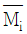
)을 바르게 나타낸 것은? (단, M은 열역학적 용량변수의 단위 몰 당 값, ni은 i성분 이외의 모든 몰 수를 일정하게 유지한다는 것을 의미한다.)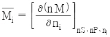
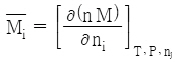
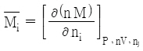
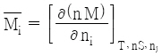
(정답률: 76%)
30. 푸개시티(Fugacity)에 관한 설명으로 틀린 것은?
- 일종의 세기(intensive properties) 성질이다.
- 이상기체 압력에 대응하는 실제기체의 상태량이다.
- 순수기체의 경우 이상기체 압력에 퓨개시티 계수를 곱하면 퓨개시티가 된다.
- 퓨개시티는 압력만의 함수이다.
(정답률: 61%)
31. 반응물 A가 아래와 같이 반응하고, 이 반응이 회분식 반응기에서 진행될 때, R 물질의 최대 농도(mol/L)는? (단, 반응기에 A 물질만 1.0 mol/L로 공급하였다.)
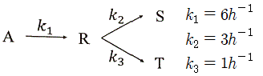
- 0.111
- 0.222
- 0.333
- 0.444
(정답률: 33%)
32. A → P 비가역 1차 반응에서 A의 전화율 관련식을 옳게 나타낸 것은?
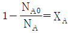
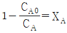
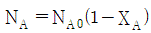
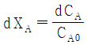
(정답률: 71%)
33. A → R → S인 균일계 액상반응에서 1단계는 2차 반응, 2단계는 1차 반응으로 진행된다. 이 반응의 목적 생성물이 R일 때, 다음 설명 중 옳은 것은?
- A의 농도를 높게 유지할수록 좋다.
- 반응온도를 높게 유지할수록 좋다.
- A의 농도는 R의 수율과 직접 관계가 없다.
- 혼합흐름 반응기가 플러그흐름 반응기보다 더 좋다.
(정답률: 68%)
34. 이상기체인 A와 B가 일정한 부피 및 온도의 반응기에서 반응이 일어날 때 반응물 A의 반응속도식(-rA)으로 옳은 것은? (단, PA는 A의 분압을 의미한다.)
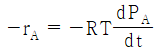
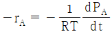
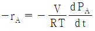
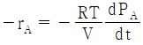
(정답률: 61%)
35. 반응물 A의 전화율(XA)과 온도(T)에 대한 데이터가 아래와 같을 때 이 반응에 대한 설명으로 옳은 것은? (단, 반응은 단열상태에서 진행되었으며, HR은 반응의 엔탈피를 의미한다.)
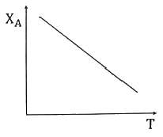
- 흡열반응, △HR ＜ 0
- 발열반응, △HR ＜ 0
- 흡열반응, △HR ＞ 0
- 발열반응, △HR ＞ 0
(정답률: 36%)
36. 다음 비가역 기초반응에 의하여 연간 2억 kg 에틸렌을 생산하는데 필요한 플러그흐름 반응기의 부피(m3)는? (단, 공장은 24시간 가동하며, 압력은 8 atm, 온도는 1200K로 등온이며 압력강하는 무시하고, 전화율 90%로 반응한다.)
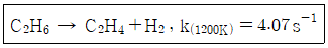
- 2.84
- 28.4
- 42.8
- 82.2
(정답률: 35%)
37. 반응물 A의 경쟁반응이 아래와 같을 때, 생성물 R의 순간 수율(øR)은?
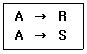
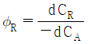
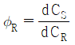
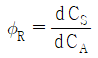
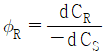
(정답률: 67%)
38. 플러그흐름 반응기에서 비가역 2차반응에 의해 액체에 원료 A를 95%의 전화율로 반응시키고 있을 때, 동일한 반응기 1개를 추가로 직렬 연결하여 동일한 전화율을 얻기 위한 원료의 공급속도(FA0′)와 직렬 연결 전 공급속도(FA0)의 관계식으로 옳은 것은?
- FA0′ = 0.5FA0
- FA0′ = FA0
- FA0′ = ln2FA0
- FA0′ = 2FA0
(정답률: 47%)
39. A와 B의 병렬반응에서 목적생성물의 선택도를 향상시킬 수 있는 조건이 아닌 것은? (단, 반응은 등온에서 일어나며, 각 반응의 활성화에너지는 E1 ＜ E2 이다.)
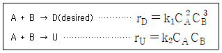
- 높은 압력
- 높은 온도
- 관형반응기
- 반응물의 고농도
(정답률: 61%)
40. 혼합흐름 반응기의 다중 정상상태에 대한 설명 중 틀린 것은? (단, 반응은 1차 반응이며, R(T)와 G(T)는 각각 온도에 따른 제거된 열과 생성된 열을 의미한다.)
- R(T)의 그래프는 직선으로 나타낸다.
- 점화-소화곡선에서 도약이 일어나는 온도를 점화온도라 한다.
- 유입온도가 점화온도 이상일 경우 상부 정상상태에서 운전이 가능하다.
- 아주 높은 온도에서는 공식을
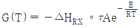
로 축소해서 생성된 열을 구할 수 있다.
(정답률: 39%)
3과목: 단위공정관리
41. 2개의 관을 연결할 때 사용되는 관 부속품이 아닌 것은?
- 유니온(union)
- 니플(nipple)
- 소켓(socket)
- 플러그(plug)
(정답률: 57%)
42. 절대습도가 0.02인 공기를 매분 50kg씩 건조기에 불어 넣어 젖은 목재를 건조시키려 한다. 건조기를 나오는 공기의 절대습도가 0.⑤일 때 목재에서 60kg의 수분을 제거하기 위한 건조시간(min)은?
- 20.0
- 20.4
- 40.0
- 40.8
(정답률: 32%)
43. 8% NaOH 용액을 18%로 농축하기 위해서 21℃ 원액을 내부압이 417 mmHg인 증발기로 4540kg/h 질량 유속으로 보낼 때, 증발기의 총괄열전달계수(kcal/m2·h·℃)는? (단, 증발기의 유효 전열 면적은 37.2m2, 8% NaOH 용액의 417 mmHg에서 비점은 88℃, 88℃에서의 물의 증발잠열은 547 kcal/kg, 가열증기온도는 110℃이며, 액체의 비열은 0.92 kcal/kg·℃로 일정하다고 가정하고, 비점상승은 무시한다.)
- 860
- 1120
- 1560
- 2027
(정답률: 21%)
44. 건조장치의 선정에서 고려할 사항 중 가장 중요한 사항은?
- 습윤상태
- 화학포텐셜
- 엔탈피
- 반응속도
(정답률: 75%)
45. 분자량이 296.5인 어떤 유체 A의 20℃에서의 점도를 측정하기 위해 Ostwald 점도계를 사용하여 측정한 결과가 아래와 같을 때, A 유체의 점도(P)는?
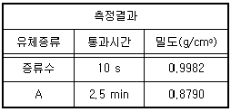
- 0.13
- 0.17
- 0.25
- 2.17
(정답률: 30%)
46. HETP에 대한 설명으로 가장 거리가 먼 것은?
- Height Equivalent to a Theoretical Plate를 말한다.
- HETP의 값이 1m보다 클 때 단의 효율이 좋다.
- (충전탑의 높이 : Z)/(이론 단위수 : N)이다.
- 탑의 한 이상단과 똑같은 작용을 하는 충전탑의 높이이다.
(정답률: 70%)
47. 1atm에서 물이 끓을 때 온도 구배(△T)와 열 전달계수(h)와의 관계를 표시한 아래의 그래프에서 핵비등(Nucleate boiling)에 해당하는 구간은?
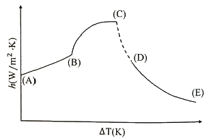
- A-B
- A-C
- B-C
- D-E
(정답률: 70%)
48. 확산에 의한 분리 조작이 아닌 것은?
- 증류
- 추출
- 건조
- 여과
(정답률: 57%)
49. 레이놀즈수가 300인 유체가 흐르고 있는 내경이 2.5cm 관에 마노메타를 설치하고자 할 때, 관 입구로부터 마노메타까지의 최소 적정거리(m)는?
- 0.158
- 0.375
- 1.58
- 3.75
(정답률: 46%)
50. 증류에 대한 설명으로 가장 거리가 먼 것은? (단, q는 공급원료 1몰을 원료 공급단에 넣었을 때 그 중 탈거부로 내려가는 액체의 몰수이다.)
- 최소환류비일 경우 이론단수는 무한대로 된다.
- 포종(bubble-cap)을 사용하면 기액접촉의 효과가 좋다.
- McCabe-Thiele법에서 q값은 증기 원료일 때 0보다 크다.
- Ponchon-Savarit법은 엔탈피-농도 도표와 관계가 있다.
(정답률: 53%)
51. Methyl acetate가 아래의 반응식과 같이 고압촉매 반응에 의하여 합성될 때 이 반응의 표준 반응열(kcal/mol)은? (단, 표준연소열은 CO(g) - 67.6 kcal/mol, CH3OCH3(g) -348.8 kcal/mol, CH3COOCH3(g) -397.5 kcal/mol 이다.)
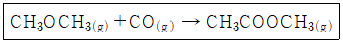
- -18.9
- +28.9
- -614
- +814
(정답률: 69%)
52. 기체 A 30vol%와 기체 B 70vol% 기체 혼합물에서 기체 B의 일부가 흡수탑에서 산에 흡수되어 제거된다. 이 흡수탑을 나가는 기체 혼합물 조성에서 기체 A가 80vol%이고 흡수탑을 들어가는 혼합기체가 100mol/h 라 할 때, 기체 B의 흡수량(mol/h)은?
- 52.5
- 62.5
- 72.5
- 82.5
(정답률: 66%)
53. 각기 반대 방향의 시속 90km로 운전중인 질량이 10ton인 트럭과 2.5ton인 승용차가 정면으로 충돌하여 두 차가 모두 정지하였을 때, 충돌로 인한 운동에너지의 변화량(J)은?
- 0
- 3.9×106
- 4.3×106
- 5.1×106
(정답률: 47%)
54. 순환(recycle)과 우회(bypass)에 대한 설명 중 틀린 것은?
- 순환은 공정을 거쳐 나온 흐름의 일부를 원료로 함께 공정에 공급한다.
- 우회는 원료의 일부를 공정을 거치지 않고, 그 공정에서 나오는 흐름과 합류시킨다.
- 순환과 우회 조작은 연속적인 공정에서 행한다.
- 우회와 순환 조작에 의한 조성의 변화는 같다.
(정답률: 69%)
55. 일산화탄소 분자의 온도에 대한 열용량(CP)이 아래와 같을 때, 500℃와 1000℃ 사이의 평균열용량(cal/mol·℃)은?
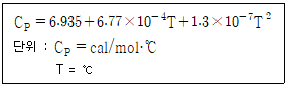
- 0.7518
- 7.518
- 37.59
- 375.9
(정답률: 62%)
56. 60℃에서 NaHCO3 포화수용액 10000kg을 20℃로 냉각할 때 석출되는 NaHCO3의 양(kg)은? (단, NaHCO3의 용해도는 60℃에서 16.4g NaHCO3/100gH2O 이고, 20℃에서 9.6g NaHCO3/100gH2O 이다.)
- 682
- 584
- 485
- 276
(정답률: 57%)
57. 그림과 같은 공정에서 물질수지도를 작성하려면 측정해야 할 최소한의 변수(자유도)는? (단, A, B, C는 성분을 나타내고 F 흐름은 3성분계, W 흐름은 2성분계, P 흐름은 3성분계이다.)
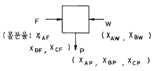
- 3
- 4
- 5
- 6
(정답률: 59%)
58. 질소와 산소의 반응과 반응열이 아래와 같을 때, NO 1mol 의 분해열(kcal)은?
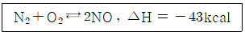
- -21.5
- -43
- +43
- +21.5
(정답률: 66%)
59. 연료를 완전 연소시키기 위해 이론상 필요한 공기량을 A0, 실제 공급한 공기량을 A라고 할 때, 과잉공기 %를 옳게 나타낸 것은?
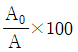
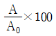
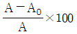
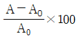
(정답률: 62%)
60. 지하 220m 깊이에서부터 지하수를 양수하여 20m 높이에 가설된 물탱크에 15kg/s의 양으로 물을 올릴 때, 위치 에니지의 증가량(J/s)은?
- 35280
- 3600
- 3250
- 2⑤
(정답률: 64%)
4과목: 화공계측제어
61. 공정
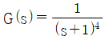
에 대한 PI제어기를 Ziegler-Nichols법으로 튜닝한 것은?- Kc = 0.5, τI = 2.8
- Kc = 1.8, τI = 5.2
- Kc = 2.5, τI = 6.8
- Kc = 2.5, τI = 2.8
(정답률: 29%)
62.
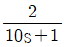
로 표현되는 공정 A와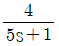
로 표현되는 공정 B에 같은 크기의 계단입력이 가해졌을 때 다음 설명 중 옳은 것은?- 공정 A가 더 빠르게 정상상태에 도달한다.
- 공정 B가 더 진동이 심한 응답을 보인다.
- 공정 A가 더 진동이 심한 응답을 보인다.
- 공정 B가 더 큰 최종 응답 변화 값을 가진다.
(정답률: 45%)
63. 연속 입출력 흐름과 내부 가열기가 있는 저장조의 온도제어 방법 중 공정제어 개념이라고 볼 수 없는 것은?
- 유입되는 흐름의 유량을 측정하여 저장조의 가열량을 조절한다.
- 유입되는 흐름의 온도를 측정하여 저장조의 가열량을 조절한다.
- 유출되는 흐름의 온도를 측정하여 저장조의 가열량을 조절한다.
- 저장조의 크기를 증가시켜 유입되는 흐름의 온도 영향을 줄인다.
(정답률: 67%)
64. 다음과 같은 블록선도에서 Bode 시스템 안정도 판단에 사용되는 개방회로 전달함수는?
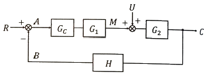
- C/R
- C/U
- G1G2U
- GCG1G2H
(정답률: 46%)
65. Smith predictor는 어떠한 공정문제를 보상하기 위하여 사용되는가?
- 역응답
- 공정의 비선형
- 지연시간
- 공정의 상호간섭
(정답률: 58%)
66. 동일한 2개의 1차계가 상호작용 없이(non interacting) 직렬연결 되어 있는 계는 다음 중 어느 경우의 2차계와 같아지는가? (단, ξ는 감쇠계수(damping coefficient) 이다.)
- ξ ＞ 1
- ξ = 1
- ξ ＜ 1
- ξ = ∞
(정답률: 62%)
67. 특성방정식의 근 중 하나가 복소평면의 우측반평면에 존재하면 이 계의 안정성은?
- 안정하다.
- 불안정하다.
- 초기는 불안정하다 점진적으로 안정해진다.
- 주어진 조건으로는 판단할 수 없다.
(정답률: 66%)
68. 블록선도에서 servo problem인 경우 proporitional control(Gc = Kc)의 offset은? (단, TR(t) = U(t) 인 단위계단신호이다.)
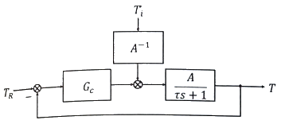
- 0
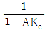
(정답률: 53%)
69. 운전자의 눈을 가린 후 도로에 대한 자세한 정보를 주고 운전을 시킨다면 이는 어느 공정제어 기법이라고 볼 수 있는가?
- 앞먹임제어
- 비례제어
- 되먹임제어
- 분산제어
(정답률: 67%)
70. 동적계(Dynamic System)를 전달함수로 표현하는 경우를 옳게 설명한 것은?
- 선형계의 동특성을 전달함수로 표현할 수 없다.
- 비선형계를 선형화하고 전달함수로 표현하면 비선형 동특성을 근사할 수 있다.
- 비선형계를 선형화하고 전달함수로 표현하면 비선형 동특성을 정확히 표현할 수 있다.
- 비선형계의 동특성을 선형화하지 않아도 전달함수로 표현할 수 있다.
(정답률: 67%)
71. 어떤 계의 단위계단 응답이 아래와 같을 때, 이 계의 단위충격응답(impulse resonse)은?
(정답률: 56%)
72. 특성방정식에 대한 설명 중 틀린 것은?
- 주어진 계의 특성방정식의 근이 모두 복소평면의 왼쪽 반평면에 놓이면 계는 안정하다.
- Routh test에서 주어진 계의 특성방정식이 Routh array의 처음 열의 모든 요소가 0 이 아닌 양의 값이면 주어진 계는 안정하다.
- 주어진 계의 특성방정식이 S4 + 3S3 - 4S2 + 7 = 0 일 때 이 계는 안정하다.
- 특성방정식이 S3 + 2S2 + 2S + 40 = 0 인 계에는 양의 실수부를 가지는 2개의 근이 있다.
(정답률: 59%)
73. 초기상태 공정입출력이 0이고 정상상태일 때, 어떤 선형 공정에 계단 입력 u(t) = 1을 입력했더니, 출력 y(t)는 각각 y(1) = 0.1, y(2) = 0.2, y(3) = 0.4 이었다. 입력 u(t) = 0.5 를 입력할 때 각각의 출력은?
- y(1) = 0.1, y(2) = 0.2, y(3) = 0.4
- y(1) = 0.⑤, y(2) = 0.1, y(3) = 0.2
- y(1) = 0.1, y(2) = 0.3, y(3) = 0.7
- y(1) = 0.2, y(2) = 0.4, y(3) = 0.8
(정답률: 58%)
74. 일 때, 최종치 정리를 옳게 나타낸 것은?
(정답률: 69%)
75. 다음 중 ATO(Air-To-Open) 제어밸브가 사용되어야 하는 경우는?
- 저장 탱크 내 위험물질의 증발을 방지하기 위해 설치된 열교환기의 냉각수 유량 제어용 제어밸브
- 저장 탱크 내 물질의 응고를 방지하기 위해 설치된 열교환기의 온수 유량 제어용 제어밸브
- 반응기에 발열을 일으키는 반응 원료의 유량 제어용 제어밸브
- 부반응 방지를 위하여 고온 공정 유체를 신속히 냉각시켜야 하는 열교환기의 냉각수 유량 제어용 제어밸브
(정답률: 57%)
76. 복사에 의한 열전달 식은 q = σAT4 으로 표현된다. 정상상태에서 T = Ts 일 때 이 식을 선형화하면? (단, σ와 A는 상수이다.)
- σA(T – Ts)
- σATs4(T – Ts)
- 3σATs3(T – Ts)2
- 4σATs3(T – 0.75Ts)
(정답률: 61%)
77. 비례제어기를 사용하는 어떤 제어계의 폐루프 전달함수는 이다. 이 계의 설정치 X에 단위 계단 변화를 주었을 때 offset 은?
- 0.4
- 0.5
- 0.6
- 0.8
(정답률: 48%)
78. 나뉘어 운영되고 있던 두 공정을 한 구역으로 통합하여 운영할 때의 경제성을 평가하고자 한다. △Tmin = 20℃로 하여 최대 열교환을 하고, 추가로 필요한 열량은 수증기나 냉각수로 공급한다고 할 때, 필요한 유틸리티와 그 에너지량은? (단, 필요에 따라 Stream은 spilt 할 수 있으며, Ts와 Tt는 해당 STream의 유입온도와 유출온도를 의미한다.)
- 냉각수, 10kW
- 냉각수, 30kW
- 수증기, 10kW
- 수증기, 30kW
(정답률: 29%)
79. 공정유체 10m3를 담고 있는 완전혼합이 일어나는 탱크에 성분 A를 포함한 공정유체가 1m3/h로 유입되며 또한 동일한 유량으로 배출되고 있다. 공정유체와 함께 유입되는 성분 A의 농도가 1시간을 주기로 평균치를 중심으로 진폭 0.3mol/L로 진동하며 변한다고 할 때 배출되는 A의 농도변화 진폭(mol/L)은?
- 0.5
- 0.⑤
- 0.0⑤
- 0.00⑤
(정답률: 45%)
80. 제어밸브(Control valve)를 나타낸 것은?
(정답률: 68%)